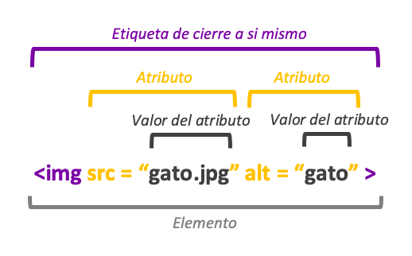

EJEMPLO:

HTML es el componente mas basico de de la web.Define el significado y la estructura del contenido web.
Un elemento HTML se distingue de otro texto en un documento mediante "etiquetas", que consisten
en el nombre del elemento rodeado por "<" y ">" .El nombre de un elemento dentro de una etiqueta no distingue
entre mayúsculas y minúsculas. Es decir, se puede escribir en mayúsculas, minúsculas o una mezcla.
Por
ejemplo, la etiqueta "title" se puede escribir como "Title", "TITLE" o de cualquier otra forma.
HTML consta de elementos, cada uno de los cuales se puede modificar por medio de algunos atributos. Los
documentos HTML están conectados entre sí mediante enlaces.
EJEMPLO:
a) p b) strong c) em d) h1
a) p b) br c) u d) em
a)strong b) h2 c) em d) u
a) p b) u c) br d) h3
a) h1 b) em c) strong d) h2
"El anidamiento consiste en el uso de una etiqueta dentro (entre la instrucción de inicio y la instrucción de
fin) de otra, de manera que los efectos de ambas se sumen o combinen"
EJEMPLO:
p
u "hola" u
p
La etiqueta "P" contiene a la etiqueta "u" la cual subraya la palabra "hola",esto es una anidamiento ya que hay una etiqueta dentro de otra y se combinan
La etiqueta img utilizado para insertar una imagen simple en una página web.

Los Atributos que tiene la etiqueta "img" son:
"src" : sirve para mostrar en dónde se encuentra la imagen que vamos a incrustar.
Alt:Sirve para describir
una imagen.
width:sirve para ajustar el tamaño

Git, junto con GitHub son el sistema de control de versiones(VCS) mas popular que es una herramienta que permite
colaborar con otros desarrolladores de un proyecto sin peligro de que se sobresescriban.
GIT y GIT UB
proporciona alojamiento para tus repositorios y varias herramientas para trabajar con ellos.